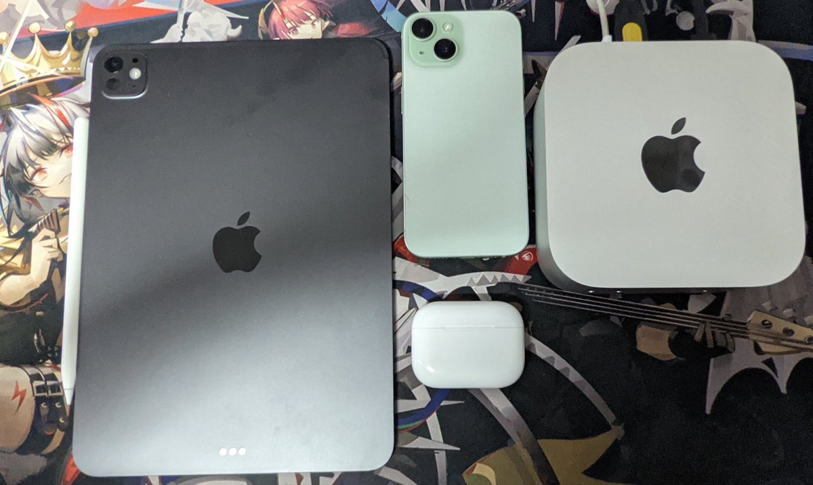

小虚空🍥
@tokerumaisurii
我也想，我希望找到工作之后可以给自己买苹果，还给爸妈包下他们的苹果，他们想要哪台有哪台，想要国行我打钱，想要港澳版我出钱让他们顺便旅游，想要加版怕太远我买了寄回去。
*一阵激烈的闹铃声响起，小虚空醒了*

サイバー環状線
@CyberKanjousen
享 苹 果 人 生
——可惜以下设备全由父母出金购买，自己事实上一分钱也没有出。
環状線希望，数年后的本科毕业之时，環状線所享的苹果人生完完全全由環状線自己的汗水搭建，不再需要为此出一分钱的是環状線的父母。 https://t.co/ZHDdT2KqMd